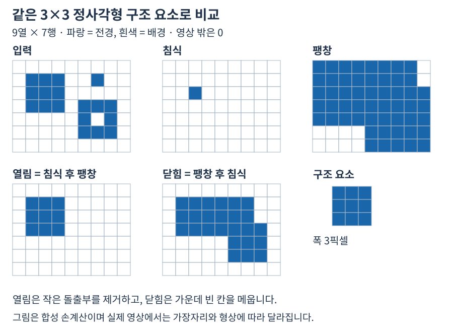

이진 형태학의 픽셀 변화
전경은 1, 영상 바깥은 0으로 계산하며 열림은 침식 후 팽창, 닫힘은 팽창 후 침식입니다.


자료에서 확인할 점
- 영상 바깥은 0이므로 가장자리 침식 결과도 확인합니다.
- 표시값은 이진 Gray8 합성 예이며 밝기 값 형태학의 경계 규칙과 혼동하지 않습니다.
실제 API에 적용하기
Open(3) 의 3은 반지름이 아니라 정사각형 구조 요소 한 변의 폭(픽셀) 입니다. 크기가 커질수록 지워질 수 있는 세부 특성도 커지므로 결함 크기보다 큰 구조 요소를 무조건 선택해서는 안 됩니다.
이 페이지의 Open(3) 에서 3은 중심을 가진 정사각형의 한 변 길이입니다. 구조 요소는 3×3이고 중심으로부터 좌우·상하 반경은 1픽셀입니다. 숫자 3이 연산을 세 번 반복한다는 뜻은 아니며, 호출 한 번의 침식과 팽창 각각에 같은 폭이 적용됩니다.
양의 홀수 폭만 유효하므로 1, 3, 5는 사용할 수 있고 0과 2는 오류입니다. 폭 1에서는 공간상의 이웃을 추가하지 않지만 입력 비영 값을 255로 바꾸는 이진 정규화는 일어납니다. 값 5가 그대로 유지된다고 기대하면 결과를 잘못 읽습니다.
커널 숫자에 담긴 의미 · Morphology · 열기와 닫기에서 함수 선언, 인자와 반환 결과를 확인하세요.
설명과 실행 결과의 범위
수치와 도형은 연결된 계약의 핵심 관계를 설명하는 예입니다. 실제 SDK 출력으로 명시한 자료를 제외하면 실행 결과나 장비 실측으로 해석하지 않습니다. 좌표계·입력 형식·수명과 오류 조건은 관련 API 계약을 확인한 뒤 적용하세요.